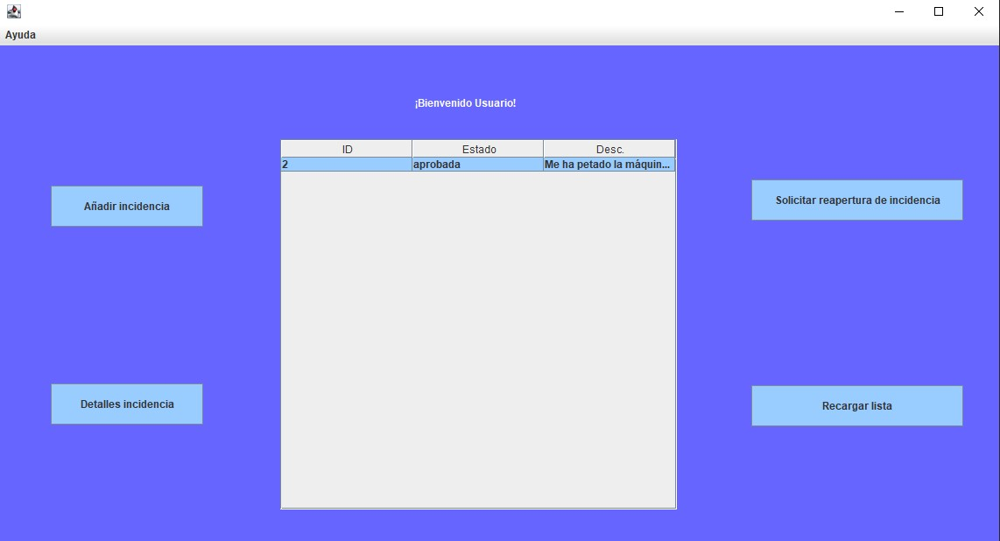

Usuario básico
El usuario básico es aquél que trabaja en la compañía, el usuario creará una petición que el gestor o administrador aceptarán o descartarán.
Cuando el usuario solicite una reapertura de incidencia esta pasara a estar resaltada en negrita
El usuario básico podrá:
- Añadir una incidencia:
Abre un cuadro de diálogo para crear una nueva incidencia en espera. Sólo será visible al técnico una vez el gestor o un administrador la apruebe.
- Detalles de una incidencia:
Abre un cuadro de diálogo con información sobre la incidencia seleccionada.
- Solicitar la reapertura de una incidencia:
Cambia el estado a “solicitando reapertura”.
- Recargar la lista:
Refresca la información en la tabla.
Imágen de referencia

Para la visualización se cuenta con una tabla en medio